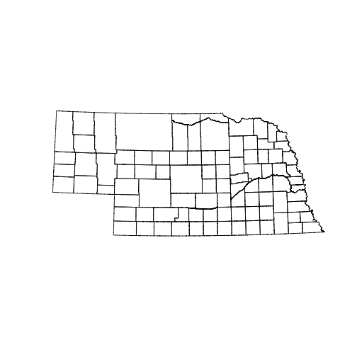
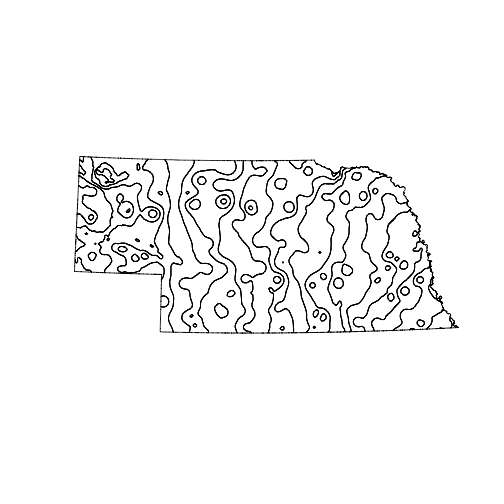

Sampling
Using spatial data in R
Learning Objectives
- Load spatial data into R
- Intersect two polygon layers
- Aggregate a raster across a list of spatial polygons
Once you have decided to use simple random sampling to choose your sites, how do you do it? There are two steps.
- Create or obtain a vector of all possible sampling units
- Use
sample()to select the units you will use.
This topic focuses on the first problem. In the following we load a dataset that provides a list of Nebraska Counties and their boundaries, and a 2nd dataset that has a raster of average annual precipitation across Nebraska. I obtained the original datasets from the NRCS Geospatial Data Gateway. However there are several steps involved in downloading data, so to ensure we all have the same data I have placed two zip files in a public folder on the UNL Box server. The county boundaries are here and the annual average precipitation data are here. After you download these files extract them into a data subdirectory of your project directory. You did create a fresh project directory, right? Your directory tree should look like this:

Directory structure
If it doesn’t, just be sure to modify the paths in the code below so that it works. As always, I assume that you have started RStudio with a project, and that the working directory is the project directory.
We need three packages to work with shapefiles. The first is sp, which has the standard spatial datastructures for R.
The second package, rgdal you need to read the shape files. To do the intersection of the two layers we need the rgeos package. So:
#install.packages(c("sp", "rgeos, rgdal")) # if needed
library(sp)
library(rgeos)rgeos version: 0.3-11, (SVN revision 479)
GEOS runtime version: 3.4.2-CAPI-1.8.2 r3921
Linking to sp version: 1.1-0
Polygon checking: TRUE
library(rgdal)Loading required package: methods
rgdal: version: 1.0-4, (SVN revision 548)
Geospatial Data Abstraction Library extensions to R successfully loaded
Loaded GDAL runtime: GDAL 1.11.2, released 2015/02/10
Path to GDAL shared files: /Library/Frameworks/R.framework/Versions/3.2/Resources/library/rgdal/gdal
Loaded PROJ.4 runtime: Rel. 4.9.1, 04 March 2015, [PJ_VERSION: 491]
Path to PROJ.4 shared files: /Library/Frameworks/R.framework/Versions/3.2/Resources/library/rgdal/proj
Linking to sp version: 1.1-1
We read in the two shapefiles using the layer names without the file extensions.
counties <- readOGR("data/government_units", layer = "county_nrcs_a_ne")OGR data source with driver: ESRI Shapefile
Source: "data/government_units", layer: "county_nrcs_a_ne"
with 93 features
It has 28 fields
class(counties)[1] "SpatialPolygonsDataFrame"
attr(,"package")
[1] "sp"
plot(counties)
annual_precip <- readOGR("data/climate/precipitation", layer = "precip1981_2010_a_ne")OGR data source with driver: ESRI Shapefile
Source: "data/climate/precipitation", layer: "precip1981_2010_a_ne"
with 23 features
It has 3 fields
class(annual_precip)[1] "SpatialPolygonsDataFrame"
attr(,"package")
[1] "sp"
plot(annual_precip)
So we’ve managed to load in both layers. There are many functions that can read ESRI shapefiles. readOGR() from package rgdal has an important advantage however. It also loads the spatial projection information present in the file. The next step is to use the precipitation data to add some information to each of the polygons in the county data. We also want to extract the area of each county. The goal is to obtain a data.frame object with one row for each county. It needs ID, area, and mean precipitation columns.
# extract the dataframe from counties
sample_frame <- as.data.frame(counties)
# take a look at the variables
names(sample_frame) # lots of stuff [1] "OBJECTID" "FIPS_C" "FIPS_I" "FIPSST" "FIPSCO"
[6] "STPO" "COUNTYNAME" "CNTYDISP" "CNTYSHORT" "CNTYSORT"
[11] "CNTYCATEGO" "CNTYACTIVE" "INDEPCITY" "CNTYSTAND" "SEATLAT"
[16] "SEATLONG" "NAD83UTM" "NAD83STATE" "NAD27STATE" "STATENAME"
[21] "CNTYSTARTD" "CNTYENDD" "LASTCHGD" "NOTE" "BOTTOM"
[26] "TOP_" "LEFT_" "RIGHT_"
sample_frame <- sample_frame[,c("OBJECTID","COUNTYNAME")]
# extract precipitation information for each county
head(over(counties, annual_precip, returnList = TRUE))[[1]]
PrecipInch FIPS_S Inches
4 17 31 17
5 18 31 18
6 19 31 19
7 20 31 20
[[2]]
PrecipInch FIPS_S Inches
4 17 31 17
5 18 31 18
6 19 31 19
7 20 31 20
8 21 31 21
9 22 31 22
10 23 31 23
[[3]]
PrecipInch FIPS_S Inches
3 16 31 16
4 17 31 17
5 18 31 18
6 19 31 19
[[4]]
PrecipInch FIPS_S Inches
13 26 31 26
14 27 31 27
15 28 31 28
[[5]]
PrecipInch FIPS_S Inches
16 29 31 29
[[6]]
PrecipInch FIPS_S Inches
15 28 31 28
16 29 31 29
17 30 31 30
The function over() does all spatial intersection operations in sp. By setting returnList = TRUE over() returns a list with one component for each polygon in counties. Inside each component is the information from all polygons in annual_precip that intersect with that polygon of counties. So the first county intersects with 4 precipitation polygons with average annual precipitation between 17 and 20 inches. We need to aggregate those 4 values into one. If we leave returnList = FALSE (the default), we get just one value per row
head(over(counties, annual_precip)) PrecipInch FIPS_S Inches
0 17 31 17
1 17 31 17
2 16 31 16
3 26 31 26
4 29 31 29
5 28 31 28
But the problem is that over() has just returned the precipitation of the first polygon. A better way to do aggregate is to calculate the mean. over() has an argument fn that specifies the function to use for aggregation.
head(over(counties, annual_precip, fn = mean))Warning in mean.default(X[[i]], ...): argument is not numeric or logical:
returning NA
Warning in mean.default(X[[i]], ...): argument is not numeric or logical:
returning NA
PrecipInch FIPS_S Inches
0 18.5 NA 18.5
1 20.0 NA 20.0
2 17.5 NA 17.5
3 27.0 NA 27.0
4 29.0 NA 29.0
5 29.0 NA 29.0
That’s better. The warnings arise because the FIPS_S field is something that taking a mean of is nonsensical. I also just want one of those columns.
sample_frame <- cbind(sample_frame,
Precip = over(counties, annual_precip, fn = mean)$PrecipInch)I also want to extract the area of each county. To do this I pull out the list of polygons, and ask each polygon for it’s area. These are S4 objects so the @ operator is used instead of $.
slotNames(counties)[1] "data" "polygons" "plotOrder" "bbox" "proj4string"
slotNames(counties@polygons) # no slots ... NULL
class(counties@polygons)[1] "list"
class(counties@polygons[[1]])[1] "Polygons"
attr(,"package")
[1] "sp"
slotNames(counties@polygons[[1]]) # there it is![1] "Polygons" "plotOrder" "labpt" "ID" "area"
sample_frame$area <- sapply(counties@polygons, function(x) x@area)
head(sample_frame) OBJECTID COUNTYNAME Precip area
0 67 Chase 18.5 2323948967
1 68 Cherry 20.0 15559306937
2 69 Cheyenne 17.5 3096764800
3 70 Clay 27.0 1484840545
4 71 Colfax 29.0 1083386436
5 72 Cuming 29.0 1487107313
And now we’re ready to pick a random sample!